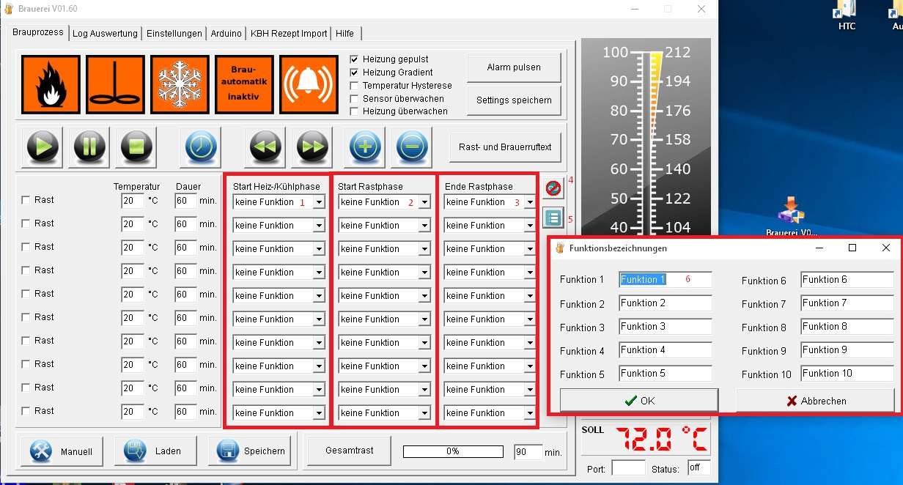

Hilfe Datei zu Brauerei V 1.60 – by Emilio – HOME
Steuerung von Zusatzfunktionen im Arduino:
Wird in den Einstellungen die
Arduino-Zusatzsteuerung gewählt, dann können
Zusatzfunktionen zu einem beliebigen Zeitpunkt im Brauprozess
gestartet werden. Hiermit ist es möglich beliebige
Automatisierungsideen zu verwirklichen. Die Startpunkte werden beim
Speichern eines Rezepts mit abgespeichert.
Wie funktioniert das?
Es gibt im Arduino 10 unterschiedliche
(leere) Funktionen. Diese Funktionen können beliebig am Start
der Heizphase einer Rast, beim Ende der Heizphase einer Rast oder bei
Rastende gestartet werden.
Hierbei ist es wichtig zu wissen, dass
die Funktion im Arduino nicht nur ein mal durchlaufen wird, sobald
der Schaltzeitpunkt erreicht wurde, sondern ab dem Schaltzeitpunkt
mit jedem Programmzyklus (ca. 0,5 Sekunden ). Das hat den Vorteil,
dass sich auch zeitabhängige Funktionen realisieren lassen (z.B.
Schalte Relais für 30 Sekunden. Ein).

Auswahl der Funktion beim Start der Heizphase für jede einzelne Rast
Auswahl der Funktion beim Ende der Heizphase für jede einzelne Rast
Auswahl der Funktion beim Ende der Rastphase für jede einzelne Rast
Umschaltung zwischen normalen und
Zusatzsteuerungsansicht
Dieser Button ist nur verfügbar,
wenn in den Einstellungen die Arduino Zusatzfunktionen aktiviert
wurden.
Mit diesem Button wird ein Fenster geöffnet in dem den Funktionen klare Namen ( z:B. Hifengabe 1 ) zugewiesen werden können.
Hier kann den einzelne Funktionen der Name zugeordnet werden.